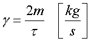
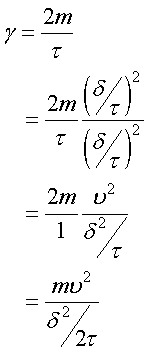
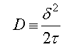
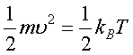
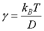
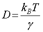

アインシュタイン・スモルコフスキーの関係式
さて，先に定義した，摩擦抗力係数，

この右辺の分母，分子に同じ値，(δ/τ)2，を掛けてみましょう．

ここで，まず，分母に注目しましょう．これって，

ですよね？
分子は，まだ説明していませんが，等分配の法則，

を使って，変形すると，

となります．
ここで，
kB：ボルツマン定数
Ｔ：絶対温度
です．
この式を，
アインシュタイン・スモルコフスキーの関係式
と呼びます．
アインシュタインは，相対性原理で有名ですが，拡散運動においても非常に貢献した方ですね．
書き換えると，

となり，拡散定数，Ｄ，の物理的な意味が理解できると思います．
生体分子においては，絶対温度はそれほど変わりませんから，拡散の程度はその物体の大きさ，形状のみに依存することになります．
（４度と３７度でも，(273+37)/(273+4)=1.12,１０％程度）
では，次に具体的な値を入れて，その大きさを実感しましょう．